Префектура Нара · город Нара · где остановиться
MIROKU NARA by THE SHARE HOTELS: отель у парка Нара, где оленей видно с террасы
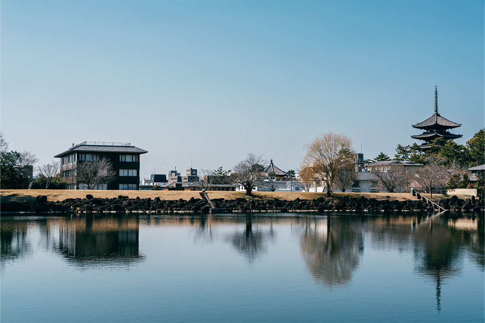
В 2021 году на южном краю парка Нара, между старым кварталом Нарамати и прудом Араикэ, открылся отель MIROKU NARA by THE SHARE HOTELS. Местное здесь всё: от кедровых столов и бумажных абажуров до соленых слив на завтрак.
Место
Между старым городом и древним лесом
Город Нара почти 1300 лет назад был столицей Японии: тогда здесь построили храм Тодайдзи и другие большие храмы. Восемь памятников города внесены в список Всемирного наследия ЮНЕСКО, и туристов здесь всегда много. Отель MIROKU NARA by THE SHARE HOTELS открылся в сентябре 2021 года в месте, где при этом удивительно тихо.
К западу от отеля лежит Нарамати, квартал, выросший на улицах древней столицы. Его деревянные дома машия построены в XIX и начале XX века. К северу начинается парк Нара с храмами Кофукудзи и Тодайдзи. С востока к зданию подходит пруд Араикэ, за которым виден первобытный лес на горе Касуга. Город и природа сходятся здесь вплотную, а от станции Кинтэцу-Нара сюда 10 минут пешком.
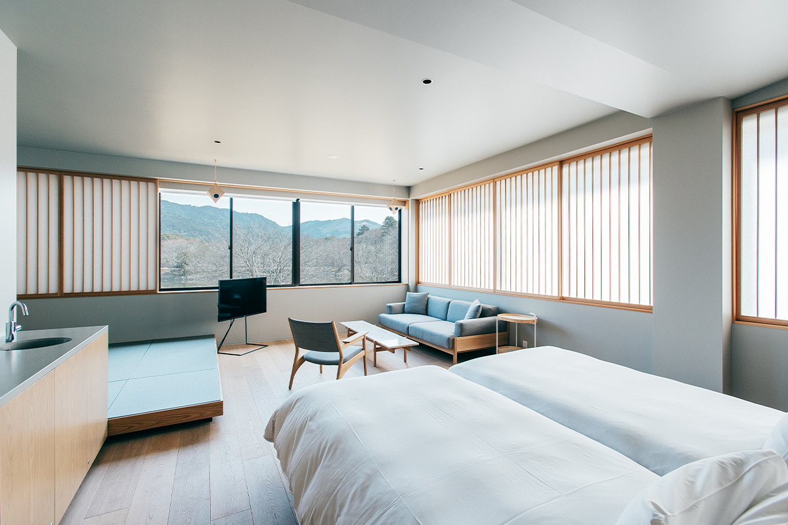
MIROKU NARA стал девятым отелем сети THE SHARE HOTELS компании ReBITA. Сеть называет свои отели лайфстайл-отелями: у каждого свой замысел, продуманный дизайн и то, что выходит за рамки ночлега. Общий девиз сети звучит как «Sharing with locals», жизнь вместе с местными. В Нара его прочитали как сосуществование разного.
«Нара была столицей, и здесь культура, пришедшая с континента, соединилась со старыми японскими традициями, так родилась собственно японская культура. Храмы и святилища, старое и новое, город и природа до сих пор живут здесь рядом. Это соседство разных ценностей мы и хотели показать во всём отеле»
руководитель проекта и реконструкции в компании ReBITA
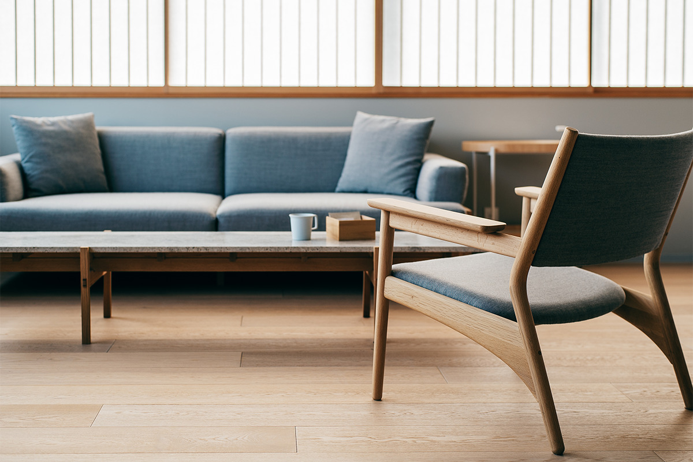
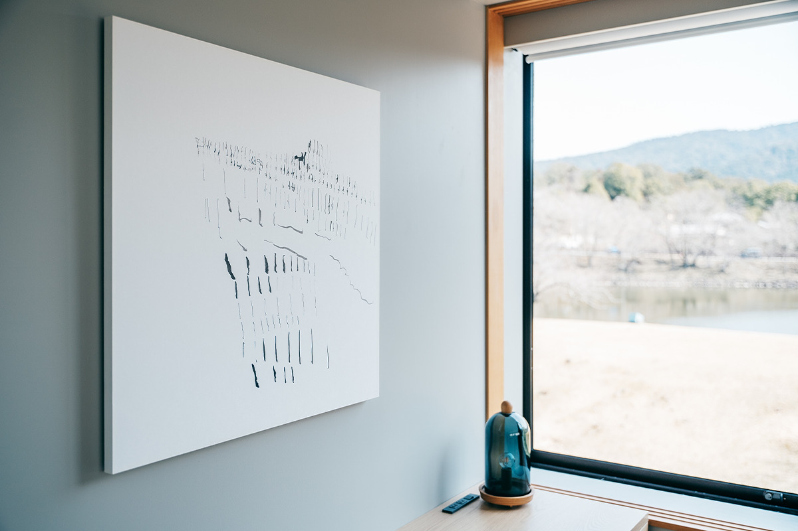
Интерьер
Три человека и материалы Нары
Облик отеля сложили три человека. Этажи с первого по четвёртый оформлял архитектор Кэйдзи Асидзава. Он ввёл в интерьер материалы и марки из Нары, чтобы прогулки по городу и отдых в номере переходили друг в друга без резкой границы.
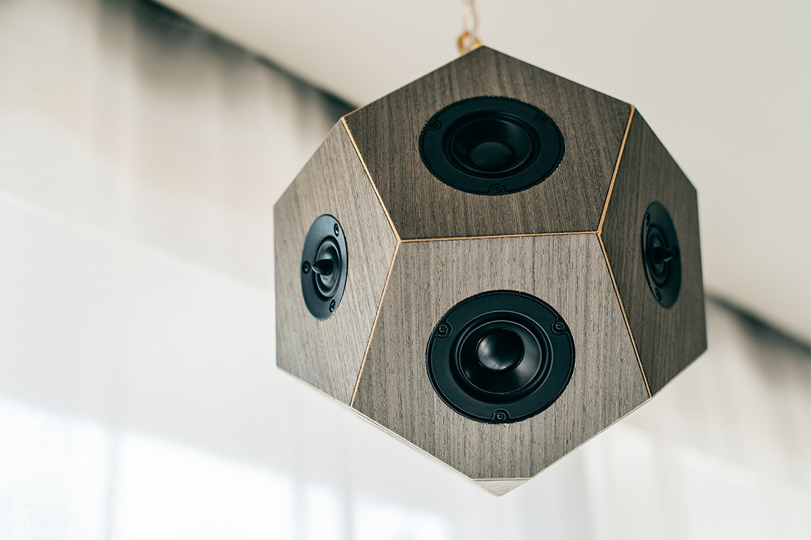
Окна номеров выходят то на парк, то на старые крыши. Из некоторых видна пятиярусная пагода храма Кофукудзи.
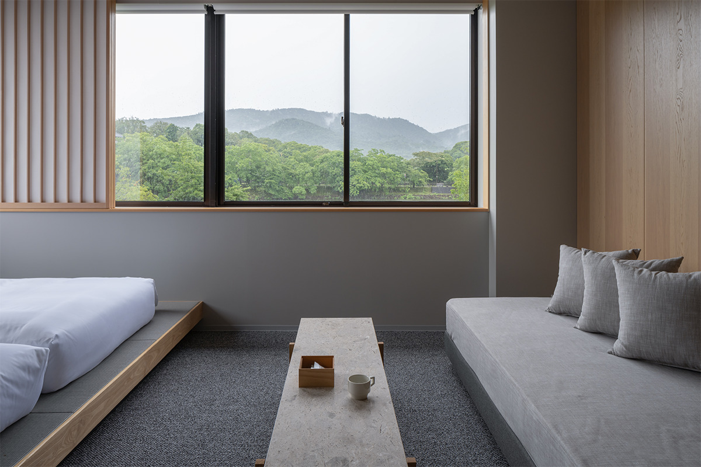
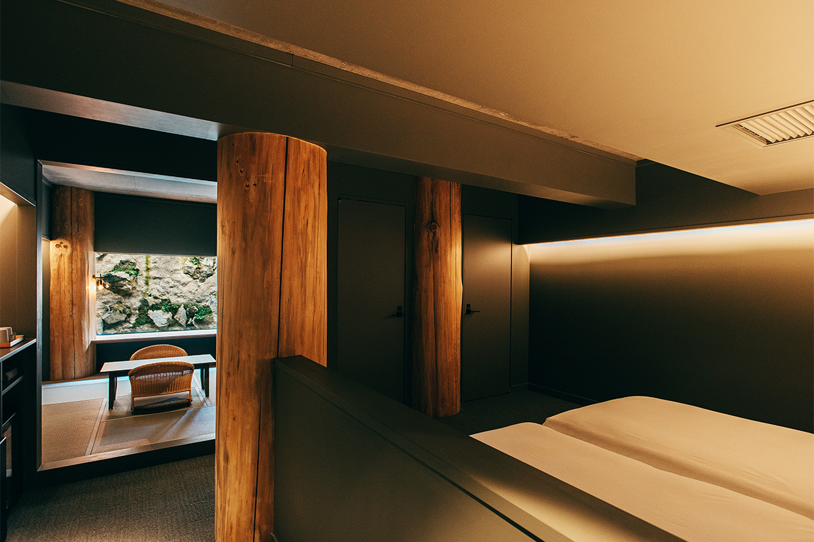
Цокольный этаж отдали архитектору и художнику, который работает с самыми простыми материалами: кедром из лесов Ёсино на юге префектуры и камнем из Асуки, древней земли первых японских дворцов. Здесь Нара выглядит грубее и древнее, чем наверху.
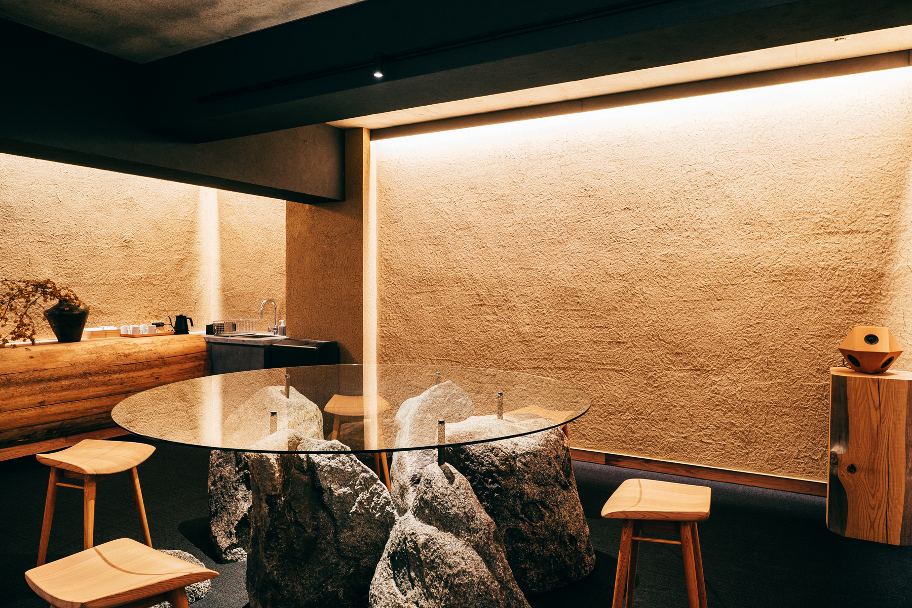
Третий человек отвечает за еду. Это владелица кафе и лавки Kuruminoki в городе Нара. Меню кафе-бара CAFE & BAR MIROKU TERRACE она составила вокруг продуктов префектуры и местной домашней кухни: местное есть и в завтраках, и в напитках, и в десертах, и в поздних закусках.
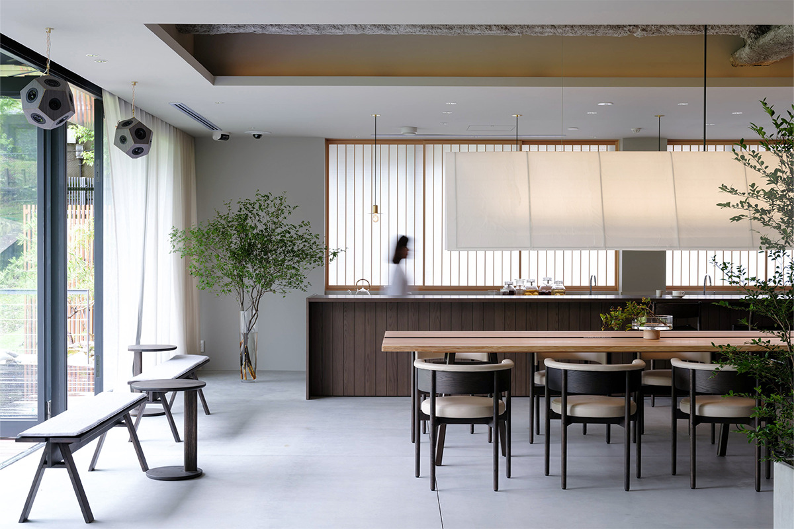
Самые популярные места в кафе находятся на террасе со стороны пруда. Отсюда видно парк, можно есть на свежем воздухе, а иногда к самой террасе подходят олени.
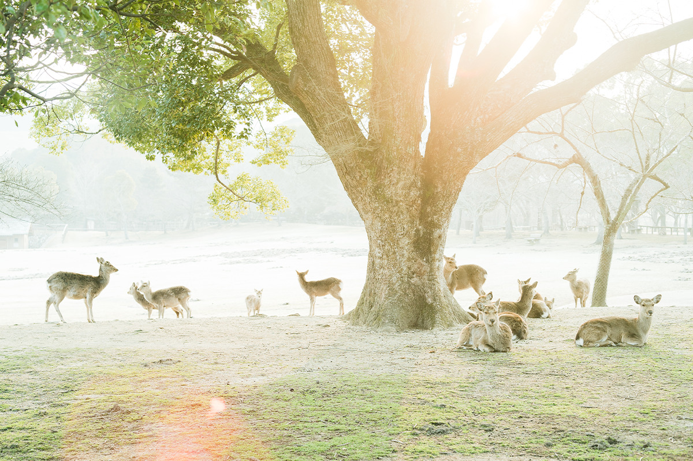
Еда
Завтрак из Нары и вечер с закусками
Завтрак подают в CAFE & BAR MIROKU TERRACE, на выбор европейский или японский. В обоих почти всё приготовлено из продуктов префектуры.
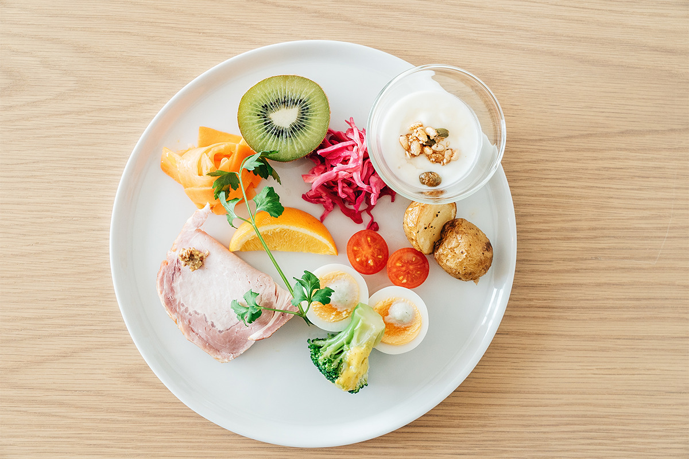
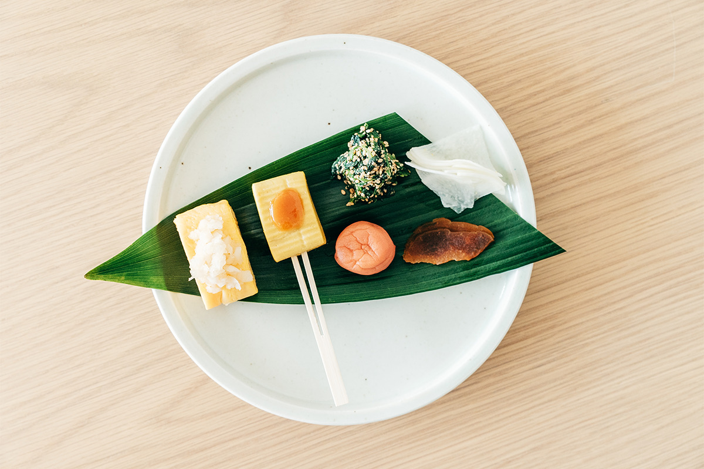
Вечером кафе превращается в бар. В закусочном наборе есть юбэси из деревни Тоцукава: юдзу аккуратно выскабливают и начиняют рисовым мисо. Так в этой горной деревне на юге префектуры издавна запасали еду. Тем, кто проголодался к ночи, подойдут отядзукэ или горячая лапша.
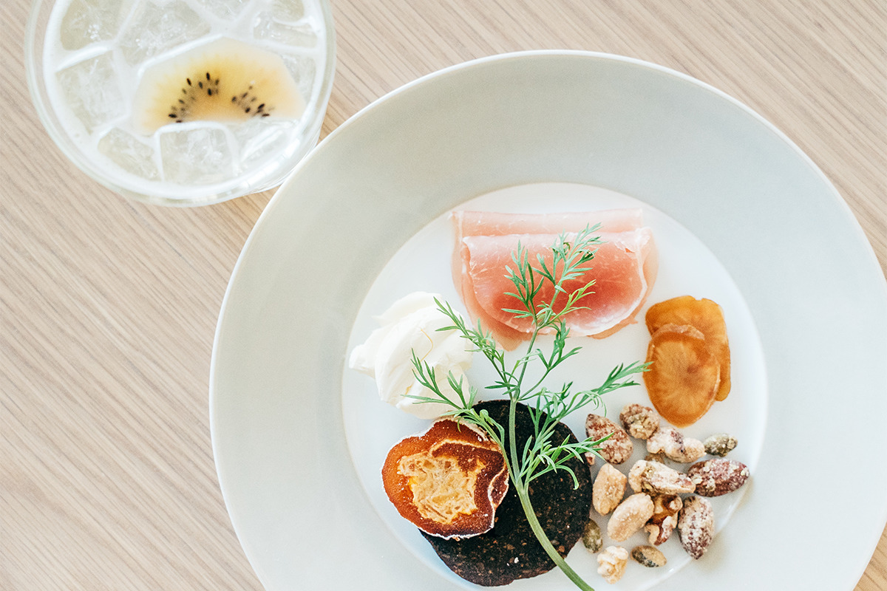
Отядзукэ готовят из риса «хинохикари» и сливы умэбоси из Цукигасэ, а заливают его ароматным обжаренным чаем ходзича из Ямато. Нюмэн, горячую лапшу в бульоне, варят из тонкой лапши мива-сомэн, которую делают у горы Мива.
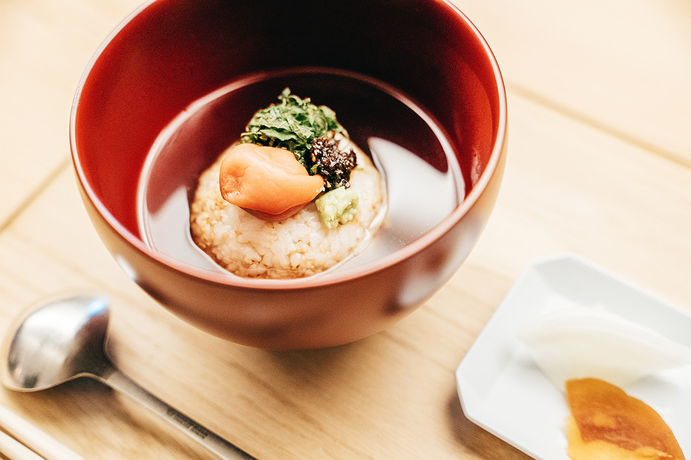
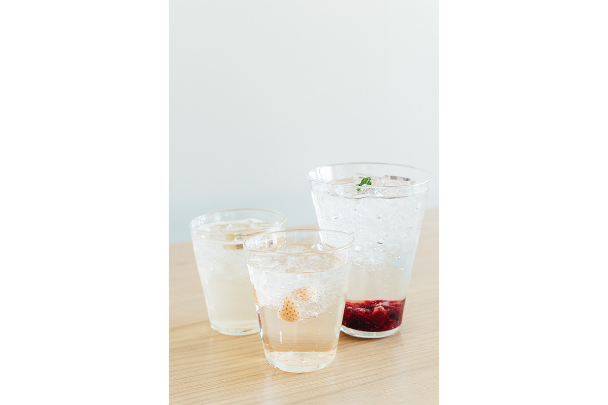
Газировку с малиной заказывают чаще всего: она кисло-сладкая и приятно лопается на языке. После ужина можно выйти на террасу и посмотреть, как темнеет лес на горе Касуга.
MIROKU NARA by THE SHARE HOTELS
- Адрес
- префектура Нара, город Нара, Такабатакэ-тё, 1116-6
- Телефон
- +81 742-93-8021
- Номера
- 44 номера семи типов, от 12 000 иен за ночь без питания (налог и сервис включены, 2022 год)
- Заезд / выезд
- 15:00 / 10:00
- Как добраться
- 10 минут пешком от станции Кинтэцу-Нара, 20 минут от станции JR Нара
Фото: Юта Того.